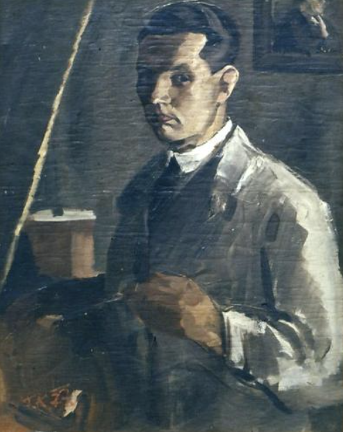

V mistični srednjeveški Škofji Loki si z navdihi iz preteklosti ustvarjate nove spomine. Škofja Loka je mesto Škofjeloškega pasijona, najstarejše slovenske drame. Prav tako pa mesto na sotočju dveh rek s posebno svetlobo in energijo že stoletja privlači slikarje in druge ustvarjalce.
V mlinu je živel in deloval slikar France Košir, ki je na svojih slikah pogosto upodabljal mlin in njegovo okolico. Večina njegovih slik je bila izgubljena – nekaj med selitvami (študiral je v Zagrebu, poučeval na Ptuju), nekaj ob nacionalizaciji, nekaj pa zato, ker so jih v strahu pred nemškimi okupatorji zakopali v zemljo, kjer jih je uničila vlaga.
Kljub temu je ohranjenih nekaj podob iz življenja v mlinu. Ob retrospektivni razstavi je njegova dela slikovito opisal Andrej Pavlovec:
“Koširjev rod prebiva tu že vsaj 250 let, mlinarstvo pa je na tem mestu izpričano že davno prej. Mlin je stisnjen na ozek prostor med Soro in kapucinsko obzidje in je pomaknjen skoraj pod sam obok Kamnitega mostu. To je bila v prvih letih ves svet mladega Franceta in so ga poživljali vozniki, ki so dan za dnem vozili v mlin žito. Ti dogodki so otroku predstavljali življenje konj, voz in nemirnega ropotanja mlinskih kamnov. Drug nadvse mikavni svet je predstavljala tik za hišo tekoča in preko jezu humeča Sora, nad jezom vsa umirjena, pod njim pa naenkrat tako drugačna, nemirna: v mirni gladini se je zrcalilo zeleno drevje, a vsa ta mirujoča zelena površina je bila naenkrat prekinjena z rezilom jezu. Kolikokrat je kot študent in zrel slikar vse to kasneje upodobil!”
— Pavlovec, 1960